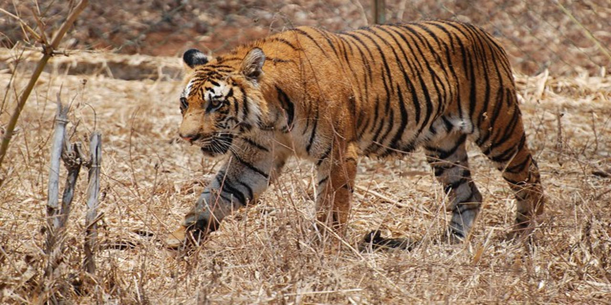

The tiger (Panthera tigris) is the largest living member of the cat family, the Felidae. It feeds
by hunting. It lives in Asia, mainly India, Bhutan, China, Korea and Siberian Russia. Tigers are
solitary animals. Tigers have orange fur with black stripes, and a white belly. The black stripes
usually extend to the white underside. The stripes are used to keep them camouflaged while hunting.
Usually, no two tigers have the same pattern of stripes.
There are tigers with different colors. There are sometimes white tigers that have white fur with
black stripes, or that even have pure white fur. They have orange or red eyes. Most Bengal tigers
have orange fur. The white coat only appears once in every 100 births. The Bengal tiger is the
national animal of Bangladesh and India.
Tigers vary in size depending on their subspecies. Siberian tigers are the largest. Males can grow
to at least 9 feet (2.7 metres) long (body length) and weigh about 900 lb (410 kg). Females are a
bit smaller. Record weight for males is claimed as 890 lbs (318 kg), but this cannot be confirmed.
